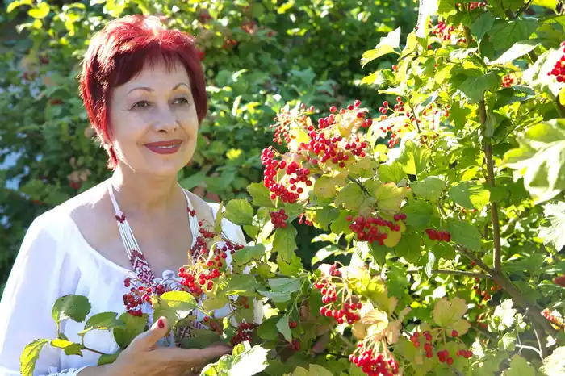

Любов Григорівна Геньба народилася 28.02.1960 року в с. Грушевому Гуляйпільського району Запорізької області у сім'ї хліборобів. Закінчила Мелітопольське училище культури (1996), Запорізький університет (2005).
Від 1987 працює у системі Гуляйпілського відділу культури. З 1998–1999 – директор Будинку культури.
Від 2003 – директор Гуляйпілського краєзнавчего музею. Авторка збірки поезій "Грушеве" (1992), "Іменем твоїм" (1995), "Паралель" (1998). Ліричні вірші Геньби про кохання вирізняються музикальністю і пісенністю. Композитор Анатолій Сердюк на тексти поетеси написав низку пісень. Поезії Любові Геньби внесені у навчальні плани шкіл, та вищих навчальних закладів. За її творами готуються курсові, дипломні та наукові роботи. Вона частий гість серед учнівської та студентської молоді. Більше двадцяти років Любов Григорівна працює в сценічній майстерності. Маючи освіту режисера масових заходів, є активним учасником районних, обласних, всеукраїнських свят, які готує як сценарист, режисер, ведуча і актор. Свої театральні здібності вона перенесла і втілила у роботі на посаді директора районного краєзнавчого музею. Виступає як режисер-постановник, сценарист, ведуча багатьох літературно-мистецьких програм, які проходять у театральних закладах м. Запоріжжя. За одинадцять років перебування її на посаді директора музею, музей вийшов на одне з перших місць в області, веде активну роботу в розвитку туристичної діяльності. Неодноразово представляла регіон і музей у документальних стрічках знятих каналами СТБ, "1+1", "Першим Національним", є частим гостем обласного радіо і телебачення. Про неї поетично говорять документальні стрічки "Голосом віків землі своїй молюсь" (2004) та "Жінка на ім'я Любов" (1999). У 2003 вийшов лазерний компакт-диск "Трояндовий гріх" з піснями на вірші Геньби. Журналісти багатьох обласних та всеукраїнських періодичних видань не обминають своєю увагою як роботу музею так і літературний шлях Любові. Любов Геньба очолює районне літературне об'єднання. Двері її кабінету не зачиняються для відвідувачів, молодих талантів. До неї йдуть за порадою, за наукою, вчитися пізнавати прекрасне.